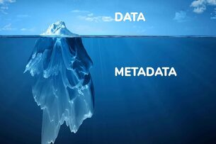

The Medium is the MessageReadURLs: what, why and how?Read

Metadata: what, why and how?Read
The Medium is the Message - Marshall McLuhan (1964)
In *The Medium is the Message*, I think it is really fascinating how
McLuhan already predicted that technology would create “villages”. I
think this really points to the idea of fandoms, or in this case,
groups of people who all believe in something similar - good or bad,
person or theory. In FVPA, we learned that facts are (and this is a
very simplistic breakdown of the idea) theories or ideas which
majority of the population, or people in a particular society at a
particular time, agree upon. Does this not mean that, in essence,
truth is relative to the theories you surround yourself with and the
time period you live in? To use McLuhan’s quote from C.G. Jung “[...]
Because living constantly in the atmosphere of slaves, he became
infected through the unconscious with their psychology. No one can
shield him from such an influence.” To follow on from this, I believe
that these “villages” create the perfect environment for
misinformation to be spread. For example, the myth that one swallows
spiders in their sleep was used as a “fact” to prove how gullible and
susceptible people are to misinformation. “In a 1993 *PC
Professional* article, columnist Lisa Holst wrote about the ubiquitous
lists of “facts” that were circulating via e-mail and how readily they
were accepted as truthful by gullible recipients. To demonstrate her
point, Holst offered her own made-up list of equally ridiculous
“facts,” among which was the statistic cited above about the average
person’s swallowing eight spiders per year, which she took from a
collection of common misbeliefs printed in a 1954 book on insect
folklore. In a delicious irony, Holst’s propagation of this false
“fact” has spurred it into becoming one of the most widely-circulated
bits of misinformation to be found on the Internet.” I also think that
McLuhan was very spot on when he said that “technology is capturing us
and holding us like prisoners in a jail without walls.” This very much
feels like a hint towards the addiction we see to phones, video games,
etc. Facebook and other social media platforms like TikTok, create
their apps to be extremely addictive due to how easily they are to
keep consuming content. Think about how Youtube suggests more videos
to watch, or how Instagram can let you endlessly scroll for new
content in the discovery page. Of course, technology and technological
advancements are not inherently bad, “The products of modern science
are not in themselves good or bad; it is the way they are used which
determines their value” (McLuhan, 1964), but it seems that companies,
particularly due to (I assume) capitalism, use technology to keep you
*needing* more content from them. Read more about this here:
[https://www.sciencefocus.com/future-technology/trapped-the-secret-ways-social-media-is-built-to-be-addictive-and-what-you-can-do-to-fight-back/](https://www.sciencefocus.com/future-technology/trapped-the-secret-ways-social-media-is-built-to-be-addictive-and-what-you-can-do-to-fight-back/)
Overall, I think that this just shows how crucial it is for us, as new
designers, to be aware of things such as stereotypes, biases, etc.
because negative content which is consumed by the unwary or ignorant,
can harm the *human* empathy that people should have for one another.
We *need* to do better and we cannot let bad things remain the way
they are, *especially* when we have the power to change it.
What are URLs and how do they work?
What is a URL? URL stands for uniform resource locator, and on a
website the URL is the specific location of a video, file, page, etc.
on the internet. Sir Tim Berners-Lee was accredited with the coinage
of this term, and in 1994 the URL was suggested a standard by Lee.
Interestingly, URLs were created based on the concept of hypertext, a
term coined by Theodore Holm Nelson in 1963, where information or
specific parts in a website/piece of text were linked to others.
Components of a URL and what do they do? A URL comprises of three
parts: the protocol, domain name, and finally, path. At the beginning
of a URL, there is the *protocol.* On most websites, this would be the
HTTP, HHTPS or even the less common FTP. The protocol formats the
information (data) it receives into something understandable and
meaningful, thus telling the browser how to communicate with a
website’s server, in order to send a retrieve information. Followed by
this is the *domain name*. This is the identifier for a specific site,
and usually brings you to the home page if no path is added on. The
domain name usually ends with a top level domain (TLD) for example,
.com, .org, .co.za, etc. When you enter the domain name in your web
browser, the servers on the domain name system (DNS) lookup name
servers associated with the domain. When your request reaches the web
server, it fetches the web page along with pieces of information
associated with it. The domain name can also begin with xn. This
indicates that the original characters were changed into a domain name
compatible with the DNS Finally, at the end is the *path* (as known as
the URL slug). Each page or file on a website has it’s own path, and
this part of the URL takes you directly to that information. Paths
comprise of many symbols which indicate various things: - A forward
slash indicates a subfolder - A question mark indicates a query by the
user, and multiple queries are separated by ampersands - A hashtag
indicates a specific place on a website You may also find that there
is percent encoding in the path. This means that the original
characters have been changed. For example, a $ sign will change to
%24.